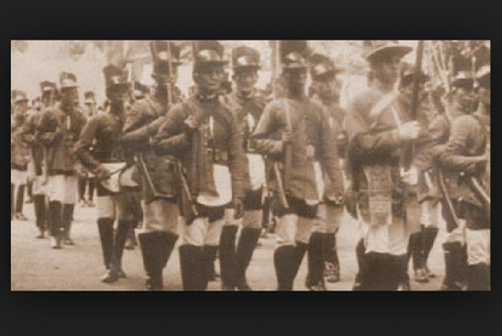
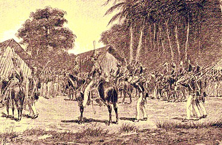

Pertempuran Besar INDONESIA

Penyerbuan Batavia
Peristiwa ini merupakan serangan pada tahun 1628 dan tahun 1629 oleh Sultan Agung dari Kesultanan Mataram ke pusat VOC di Batavia.
Penyerbuan ini berlangsung pada tahun 1628 dengan tujuan untuk mengusir VOC dari Pulau Jawa.

Perang Jawa
Perang Jawa adalah perang besar yang pernah terjadi pada masa kolonial Belanda.
Perang ini melibatkan masyarakat Jawa dan Tionghoa yang memberontak kepada para tentara Belanda di wilayah Batavia.

Perang Diponegoro
Perang Diponegoro dapat dikatakan sebagai perang jilid dua dari Perang Jawa yang berlangsung selama lima tahun di Pulau Jawa.
Operasi ini dipimpin oleh Pangeran Diponegoro selama periode tahun 1825 hingga 1830.